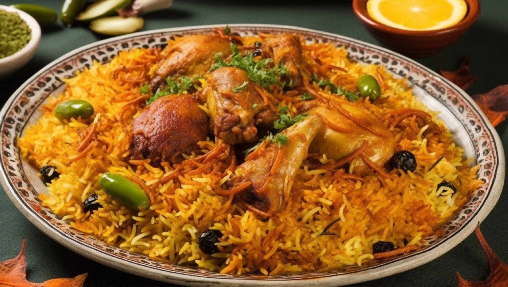

Chicken Biryaani
Biryani is a rice dish that originated in India and is now popular all over the world. It is made with rice, meat, spices, and yogurt. The rice is typically basmati rice, which is a long-grain rice that is known for its aroma and flavor. The meat is typically chicken, lamb, or goat, but other meats such as shrimp or fish can also be used. The spices that are used in biryani vary depending on the region, but they typically include turmeric, cumin, coriander, and chili powder. The yogurt is used to marinate the meat and to give the biryani a creamy texture.
Biryani is thought to have originated in the Mughal Empire, which ruled India from the 16th to the 19th centuries. The Mughal emperors were known for their love of food and they introduced many new dishes to India, including biryani. Biryani quickly became popular among the Mughals and it soon spread to other parts of India.
Ingredients for Chicken Biryaani
- 1 kg boneless, skinless chicken thighs, cut into 1-inch pieces
- 1 tablespoon vegetable oil
- 1 onion, chopped
- 2 cloves garlic, minced
- 1 inch ginger, minced
- 1 teaspoon ground turmeric
- 1 teaspoon ground cumin
- 1 teaspoon ground coriander
- 1/2 teaspoon chili powder (optional)
- 1/2 teaspoon salt
- 1/4 teaspoon black pepper
- 1/2 cup plain yogurt
- 1/4 cup chopped cilantro
- 1/4 cup chopped mint
- 2 cups basmati rice, rinsed and soaked for 30 minutes
- 3 cups chicken broth
- 1/2 cup fried onions (optional)
- 1/4 cup saffron milk (optional)
Instructions
- 1. Heat the oil in large pot or Cutch oven over medium heat.Add the chicken and cook untill browned on all sides
- 2. Add the onion, garlic, and ginger to the pot and cook until softened, about 5 minutes.
- 3. Stir in the turmeric, cumin, coriander, chili powder (if using), salt, and pepper. Cook for 1 minute more.
- 4.Add the yogurt, cilantro, and mint to the pot and stir to combine.
- 5.Add the rice and chicken broth to the pot and bring to a boil.
- 6. Reduce the heat to low, cover, and simmer for 20 minutes, or until the rice is cooked through
- 7. Stir in the fried onions and saffron milk (if using) and serve immediately.